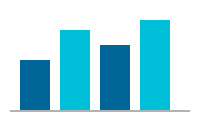

Windows, macOS, and other operating systems offer a Forced Colors Mode (historically called High Contrast Mode) that replaces page colours with a limited OS-controlled palette. Browsers enforce this via the CSS forced-colors media query. This page is a developer reference: how to detect it, how to adapt to it, and which system colour keywords to use.
To test: Windows → Settings → Accessibility → Contrast Themes. Or: Chrome / Edge DevTools → Rendering tab → Emulate CSS media feature forced-colors: active.
The browser sets forced-colors: active when an OS contrast theme is on. Wrap your overrides in this query — the browser rewrites most colours automatically, so you only need to step in for elements that lose meaning without colour.
The demo box above uses a coloured background to signal its visual boundary. In forced-colors mode that background is stripped — so a border is added to replace it.
/* Works in all modes; forced-colors overrides the colours anyway */
.panel { background-color: var(--surface); }
/* Step in only where needed */
@media (forced-colors: active) {
.panel {
border: 1px solid ButtonBorder; /* replaces the stripped background */
}
}<picture>
Recommended
Background images are always stripped in forced-colors mode. Inline <img> images are preserved but their colours are not adapted. Use <picture> with a forced-colors: active source to serve an alternative high-contrast image.

<picture>
<source media="(forced-colors: active)" srcset="chart-hcm.svg" />
<img src="chart-default.svg" alt="Bar chart with four bars" />
</picture>The HCM version uses alternating solid and hatched fills so bars remain distinguishable without colour.
These CSS keywords resolve to the OS palette when forced-colors is active. Use them in @media (forced-colors) overrides to integrate with the OS theme. Swatches show the browser's resolved system colour values — most meaningful when viewed in forced-colors mode.
| Swatch | Keyword | Description | Typical CSS property |
|---|---|---|---|
| Page background & text | |||
| Aa | Canvas |
Page / app background | background-color |
| Aa | CanvasText |
Body text colour | color, SVG fill, stroke |
| Aa | GrayText |
Disabled / inactive text | color on :disabled, placeholders |
| Hyperlinks | |||
| Aa | LinkText |
Unvisited link | color on a:link |
| Aa | VisitedText |
Visited link | color on a:visited |
| Aa | ActiveText |
Active (pressed) link | color on a:active |
| Buttons & form controls | |||
| Aa | ButtonFace |
Button background | background-color on <button> |
| Tt | ButtonText |
Button label text | color on <button> |
ButtonBorder |
Button border | border-color on <button> |
|
| Aa | Field |
Input / select background | background-color on <input>, <select> |
| Tt | FieldText |
Input text | color on <input> |
| Selection & highlight | |||
| Aa | Highlight |
Selected text background | background-color on ::selection |
| Tt | HighlightText |
Text on Highlight | color on ::selection |
| Aa | SelectedItem |
Selected item background | background-color on focused list items |
| Tt | SelectedItemText |
Text on SelectedItem | color on selected items |
| Aa | Mark |
Marked / highlighted text background | background-color on <mark> |
| Tt | MarkText |
Text on Mark | color on <mark> |
| Accent | |||
| Aa | AccentColor |
OS accent (checkboxes, sliders, focus) | accent-color; focus ring colour |
| Tt | AccentColorText |
Text on AccentColor background | color on accent-bg elements |
Cards and panels separated only by background colour become invisible when all backgrounds collapse to Canvas. Add a border in forced-colors mode.
@media (forced-colors: active) {
.card, .panel {
border: 1px solid ButtonBorder;
}
}currentColorSVG fills and strokes are overridden to CanvasText by the browser. The safest approach is to author your SVGs with fill="currentColor" — the icon then follows text colour in all modes. Only opt out with forced-color-adjust: none when the colour itself carries meaning (a red error icon, a traffic light).
/* Recommended: icon follows text colour */
.icon { fill: currentColor; }
/* Only when colour is the content */
@media (forced-colors: active) {
.status-error {
forced-color-adjust: none;
color: red;
}
}outline, not box-shadowbox-shadow is suppressed in forced-colors mode. Any focus ring that relies on it becomes invisible. Use outline — it is preserved and mapped to a system colour automatically.
/* Visible in all modes */
:focus-visible {
outline: 3px solid ButtonBorder;
outline-offset: 2px;
box-shadow: none;
}forced-color-adjust: none opts an element out of the OS palette entirely. Reserve it for elements where colour is the content (colour pickers, data visualisations). Applying it broadly defeats the OS setting and harms the users who depend on it.
/* Only for elements where colour IS the content */
.color-swatch {
forced-color-adjust: none;
}
/* Never do this */
* { forced-color-adjust: none; }| Query | Browser support | Notes |
|---|---|---|
forced-colors: active |
All modern browsers | OS contrast theme is on. Use system colour keywords. |
prefers-contrast: more |
Chrome 96+, Safari 14.1+, Firefox 101+ | User wants higher contrast — not the same as forced-colors. Increase contrast values manually. |
prefers-contrast: less |
Chrome 96+, Safari 14.1+ | User prefers softer contrast (some low-vision or sensory conditions). |
prefers-reduced-motion: reduce |
All modern browsers | Disable or simplify animations and transitions. |
prefers-reduced-transparency: reduce |
Safari 14+, Chrome 118+ | Remove glass / blur effects. |
-ms-high-contrast: active |
IE / old Edge only | Deprecated. Replace with forced-colors: active. |
Prefer CSS-only solutions. When JS logic must branch on forced-colors — for example, drawing a canvas chart — use window.matchMedia:
Forced colors active on this browser: …
const mql = window.matchMedia('(forced-colors: active)');
function onForcedColorsChange(e) {
redrawChart(e.matches); // true when HCM is on
}
onForcedColorsChange(mql); // initial check
mql.addEventListener('change', onForcedColorsChange); // OS toggleThe older technique — injecting a div, setting an unusual colour, reading back the computed value — was a workaround for pre-forced-colors browsers. All modern browsers support the media query natively; the workaround is no longer needed.